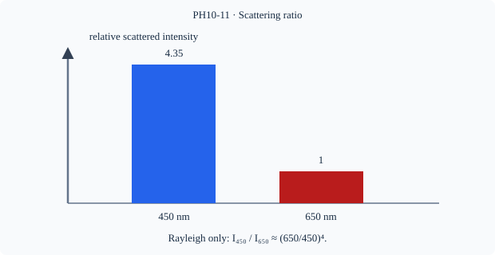

Prerequisite bridge
PH10-01
Before starting, identify the reference frame, directed rays, units and applicable geometric assumptions. Unbound prerequisites remain provisional.
Connected textbook foundation (preserved from PR #5)
12. Scattering is a different mechanism
The blue appearance of a clear daytime sky and redder sunsets are often discussed using wavelength-dependent scattering. This is not identical to prism dispersion or the refraction of a ray at an abrupt interface. The eye receives light that has been redirected by particles and molecules in the atmosphere. Simple Rayleigh-type reasoning emphasizes stronger scattering of shorter visible wavelengths under suitable assumptions, but atmospheric conditions and observer geometry matter.
Discrimination exercise: A triangular glass prism produces an ordered spectrum on a screen; distant hazy blue light is seen from a region of the atmosphere. Which mechanism would be modeled in each case? The deciding evidence is the physical interaction and geometry, not the fact that both phenomena involve colour.
Build and check the model
Scattering redistributes light into directions because light interacts with particles or inhomogeneities. For particles much smaller than wavelength in the Rayleigh regime, scattered intensity under comparable conditions varies approximately as 1/λ⁴. Short wavelengths are scattered more strongly, explaining a blue sky and reddish direct sunlight along a long atmospheric path. Larger droplets may scatter broadly across visible wavelengths, so clouds appear white or gray depending on illumination and thickness.
Worked anchor
Comparing λ=450 and 650 nm under ideal Rayleigh conditions, intensity ratio I450/I650=(650/450)^4≈4.35. This ratio is not a general law for large droplets or multiple scattering.
Condition and limiting check
The sky is not simply violet because sunlight spectrum, atmospheric absorption and human visual sensitivity also affect perceived color.
Misconception repair
A prism spectrum is wavelength-dependent refraction, not light scattered sideways from particles.
Reasoning diagram

Self-check before transfer
In the Rayleigh regime, doubling wavelength changes intensity by what factor?
Check the reasoning
I∝λ⁻⁴, so intensity falls to 1/16, all else equal.
Source and figure status
Curriculum pointer CBSE10; candidate scope only. Preserved chapter manuscript. Original subtopic-specific figure attached. Scientific figure and teaching-sufficiency reviews remain HOLD.